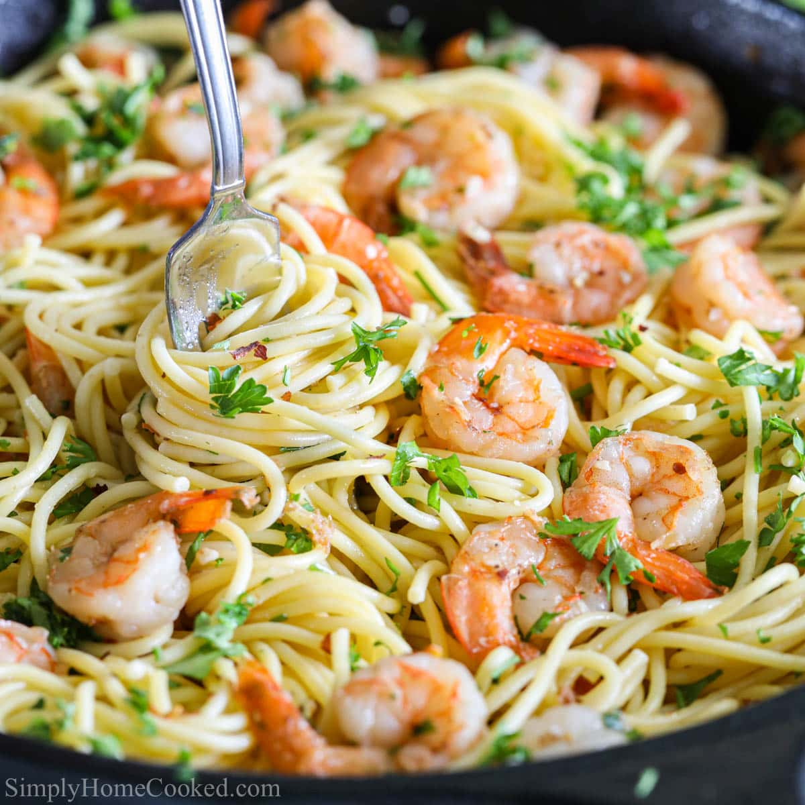

Shrimp Scampi Pasta Recipe
Ingredients:
- 400g linguine or spaghetti
- 250g shrimp, peeled and deveined
- 3 tablespoons butter
- 2 tablespoons olive oil
- 4 cloves garlic, minced
- ½ teaspoon red pepper flakes
- ½ cup dry white wine
- Juice of 1 lemon
- Salt & black pepper to taste
- Fresh parsley, chopped
- 50g parmesan cheese, grated (optional)
Instructions:
- Cook pasta in salted boiling water until al dente, then drain.
- In a pan, melt butter with olive oil and sauté garlic until fragrant.
- Add red pepper flakes and shrimp, cooking until pink and fully cooked.
- Pour in white wine and let simmer for 2 minutes.
- Stir in lemon juice, salt, and black pepper.
- Toss in cooked pasta and coat well with the sauce.
- Garnish with fresh parsley and parmesan cheese if desired.
- Serve immediately and enjoy!